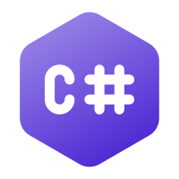

Python

Python é uma linguagem de programação de alto nível, interpretada de script, imperativa, orientada a objetos, funcional, de tipagem dinâmica e forte. Foi lançada por Guido van Rossum em 1991. Atualmente, possui um modelo de desenvolvimento comunitário, aberto e gerenciado pela organização sem fins lucrativos Python Software Foundation. Apesar de várias partes da linguagem possuírem padrões e especificações formais, a linguagem, como um todo, não é formalmente especificada. O padrão na pratica é a implementação CPython. A linguagem foi projetada com a filosofia de enfatizar a importância do esforço do programador sobre o esforço computacional. Prioriza a legibilidade do código sobre a velocidade ou expressividade. Combina uma sintaxe concisa e clara com os recursos poderosos de sua biblioteca padrão e por módulos e frameworks desenvolvidos por terceiros.
Java script

JavaScript é uma linguagem de programação amplamente utilizada para o desenvolvimento de páginas web interativas. Ela é executada no lado do cliente (navegador) e permite a criação de efeitos dinâmicos, como animações, validação de formulários e manipulação de conteúdo sem a necessidade de recarregar a página. Além disso, com o uso de frameworks e bibliotecas, como React, Angular e Vue, JavaScript se tornou ainda mais poderoso, sendo essencial tanto no desenvolvimento front-end quanto no back-end (com Node.js). Sua versatilidade e ampla adoção fazem dela uma das linguagens mais importantes e populares no cenário da web.
C#
C# (pronunciado "C-sharp") é uma linguagem de programação desenvolvida pela Microsoft, parte do .NET Framework. É uma linguagem orientada a objetos, simples, moderna e segura, amplamente usada para o desenvolvimento de aplicações desktop, web, jogos (com Unity) e sistemas corporativos. C# combina a facilidade de uso com o poder e a flexibilidade, oferecendo recursos como gerenciamento automático de memória e suporte a paralelismo. Sua sintaxe é semelhante à de outras linguagens C-based, como C++ e Java, o que facilita a transição entre elas. Com o .NET Core, C# se tornou ainda mais versátil, permitindo o desenvolvimento de aplicações multiplataforma.
R

R é uma linguagem de programação e ambiente de software voltada para análise estatística, manipulação de dados e visualização gráfica. Amplamente utilizada por estatísticos, cientistas de dados e pesquisadores, R oferece uma vasta gama de pacotes e funções para realizar cálculos complexos e gerar gráficos avançados. Sua sintaxe é simples, mas poderosa, e permite realizar desde análises exploratórias até modelos estatísticos sofisticados. Além disso, R é uma ferramenta open-source, o que facilita sua personalização e a criação de novos pacotes. A comunidade ativa de desenvolvedores contribui constantemente para o crescimento e aprimoramento da linguagem.